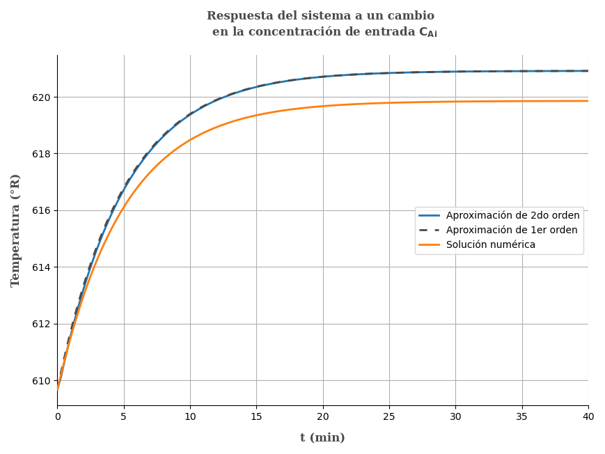

Problema 5.21 (Process Dynamics and Control - Seborg, Edgar, M, D)

Una reacción exotérmica toma lugar en un tanque agitado adiabático, La reacción líquida ocurre a volumen constante V = 100 gal, La reacción puede ser considerada de primer orden e irreversible dada por la ecuación
k=k0e−ER/T
Con k0=2.4×1015 y ER=20 000.
Donde T esta en °R, usando los datos proporcionados abajo determine la función transferencia que relaciona la temperatura de salida T, y la concentración de entrada CAi, describa lo que se asume para resolverlo. Simplifique la función transferencia haciendo una aproximación a primer orden, muestre que es válida con una perturbación tipo escalón unitario(heaviside) y compare las respuestas con la respuesta original y la respuesta de función de transferencia no simplificada.
Condiciones de estado estacionario
Ts=150 °Fq=20 gal/minCAis=0.8 lb mol/pie3
Propiedades físicas de la mezcla
Cp=0.8 BTU/(lb °F)−ΔHR=500 kJ/(lb mol)ρ=52 lb/pie³
Reescribiendo nuestros datos, pero estandarizando unidades. Sabiendo que:
T[°R]=T[°F]+459.671 BTU =1.055 kJ1 pie³ =7.48 gal
Ts=609.67 °R−ΔHR=473.9336 BTU/(lb mol)q=2.6738 pie³/minV=13.3690 pie³
Realizando el balance de materia para los moles de A.
VdtdCA=q(CAi−CA)−Vk(T)CA .... (1)
Realizando el balance en estado estacionario
0=q(CAis−CAs)−Vk(Ts)CAs .... (2)
Restado (1) y (2) y adecuando la ecuación para cambiar a variables desviación
Vdtd(CA−CAs)=q[(CAi−CAis)−(CA−CAs)]−V[k(T)CA−k(Ts)CAs]
Conviertiendo a variables desviación
VdtdCA′=q(CAi′−CA′)−V(k(T)CA−k(Ts)CAs) ...(3)
Linealizando la expresión k=k0eER/T usando la aproximaciones en series de taylor al rededor del el punto del estado estacionario.
f(x,y)=f(xs,ys)+dxdf∣∣∣∣∣x=xs(x−xs)+dydf∣∣∣∣∣y=ys(y−ys)
Reemplazando con f(T,CA)=k(T)⋅CA con k(T)=k0e−ER/T y T, CA como variables independientes
dTdf∣∣∣∣∣T=Ts,CA=CAs=Ts2k0ERe−ER/TsCAs
dCAdf∣∣∣∣∣T=Ts,CA=CAs=k0e−ER/Ts
k(T)CA=k(Ts)CAs+Ts2k0ERe−ER/TsCAs(T−Ts)+k0e−ER/Ts(CA−CAs)
En variables desviación es:
k(T)CA−k(Ts)CAs=Ts2k0ERe−ER/TsCAsT′+k0e−ER/TsCA′ ... (4)
Para una ecuación muy extensa es mejor reemplazar cuidadosamente los datos, pero antes debemos hallar el valor de CAs.
Despejando de la ecuación (2) del balance en estado estacionario.
0=q(CAis−CAs)−Vk(Ts)CAs
0=q(CAis−CAs)−Vk0eER/TsCAs
0=2.6738(0.8−CAs)−13.3690×2.4×1015e−20000/609.67CAs
Despejando
CAs=0.0116 lb mol/ pie³
Ahora reemplazando todos los datos conocidos en la ecuación (4)
k(T)CA−k(Ts)CAs=609.6722.4×101520000e−20000/609.67×0.00116T′+2.4×1015e−20000/609.67CA′
k(T)CA−k(Ts)CAs=0.008485T′+12.2025CA′ ... (5)
Reemplazando en la ecuación (3) y reemplazando datos conocidos
VdtdCA′=q(CAi′−CA′)−V(k(T)CA−k(Ts)CAs)
VdtdCA′=q(CAi′−CA′)−V(0.008485T′+12.2025CA′)
13.369dtdCA′=2.6738(CAi′−CA′)−13.369(0.008485T′+12.2025CA′)
13.3690dtdCA′=2.6738(CAi′−CA′)−0.11343T′−163.1352CA′
Aplicando la transformada de Laplace y ordenando
13.369sCA′(s)=2.6738CAi′(s)−0.11343T′(s)−165.809CA′(s)
CA′(s)=13.369s+165.8092.6738CAi′(s)−0.11343T′(s) ... (6)
Realizando el balance de energía del sistema
(dtdU)=Hi−H+ΔHR(T)
ρVCpdtdT=qρCp(Ti−T)+VΔHRk(T)CA
En estado estacionario
0=qρCp(Tis−Ts)+VΔHRk(Ts)CAs
Restando ambas ecuaciones y expresando en variables desviación
ρVCpdtdT′=qρCp(Ti′−T′)+VΔHR(k(T)CA−k(Ts)CAs)
Reemplazando la ecuación (5) y reemplazando valores conocidos
52×13.369×0.8dtdT′=2.6738×52×0.8(Ti′−T′)+13.369×473.9636(0.008485T′+12.2025CA′)
556.1504dtdT′=111.2300(Ti′−T′)+53.7645T′+77315.2633CA′
Observando la ecuación y revisando el enunciado no pide hallar la función transferencia que relaciona la temperatura con la concentración de entrada es decir T′(s)/CAi′, y no indica una variación en la temperatura de entrada Ti al no existir variación en la temperatura Ti la variable desviación es Ti′=Ti−Tis=Tis−Tis=0.
Por lo que nuestra ecuación anterior se simplifica a:
556.1504dtdT′=−57.4655T′+77315.2633CA′
Aplicando la transformada de Laplace y ordenando
556.1504sT′(s)=−57.4655T′(s)+77315.2633CA′(s)
T′(s)(556.1504s+−57.4655)=77315.2633CA′(s)
Reemplazando CA′ de la ecuación (6)
T′(s)(556.1504s+57.4655)=77315.2633(13.369s+165.8092.6738CAi′(s)−0.1134T′(s))
T′(s)(556.1504s+57.4655)(13.369s+165.809)+8767.5508T′(s)=77315.2633×2.6738CAi′(s)
CAi′(s)T′(s)=(556.1504s+57.4655)(13.369s+165.809)+8767.5508206725.5510
CAi′(s)T′(s)=7435.1747s2+92982.998s+18295.8479206725.5510
CAi′(s)T′(s)=s2+12.5058s+2.460727.8037
CAi′(s)T′(s)=(s+0.19995)(s+12.3585)27.8037
CAi′(s)T′(s)=(5s+1)(0.08092s+1)11.2488 ... α
Para una perturbación CAi′=1/s
T′(s)=s(5s+1)(0.08092s+1)11.2488
Realizando al antitransformada(de tablas)
T′(t)=11.2488(1−4.919085e−t/5+4.919080.08092e−t/0.08092) ... β
Ahora modificando la ecuación notando que el termino 5s>>0.08092s aproximando este último a cero
T′(s)=s(5s+1)11.2488
Realizando la antitransformada
T′(t)=11.2488(1−e−t/5) ... γ
Comparando las gráficas de las ecuaciones β y γ

Como se observa en la gráfica una aproximación de primer orden es suficiente, notesé también que existen una sobreestimación de la ganancia con la aproximación que se ha realizado.
Referencias
- Seborg, D. E.; Edgar, T. F.; Mellichamp, D. A.; Doyle, F. J. (2016). Process Dynamics and Control (4th edition). John Wiley & Sons, Inc. ISBN 978-1-119-28591-5.